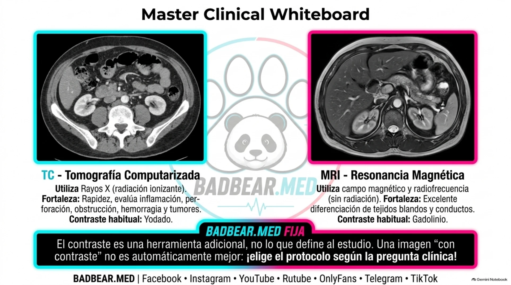
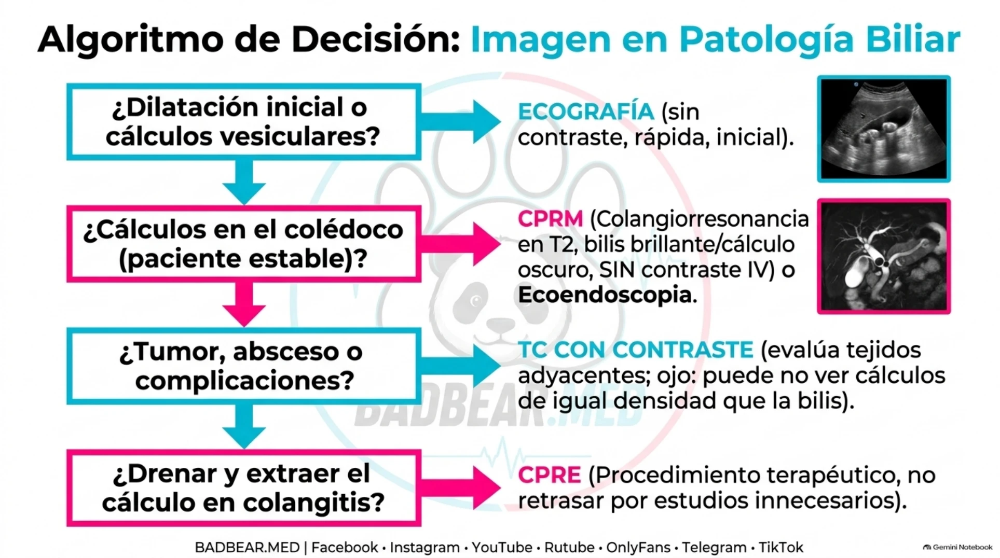

Tomografía, resonancia y elección de imagen en patología biliar
Principios físicos, contraste, litiasis y decisiones entre ecografía, CPRM, ecoendoscopia y CPRE.
Fuentes rápidas del capítulo
Acceso directo a guías, artículos y revisiones internacionales utilizadas en este tema.
Qué es una tomografía computarizada
La tomografía computarizada (TC) utiliza un tubo de rayos X, detectores y reconstrucción computacional para obtener cortes del cuerpo. El tubo gira alrededor del paciente y los detectores registran la atenuación del haz. Las reconstrucciones permiten evaluar planos axial, coronal y sagital. La TC no es una fotografía tomada por una cámara dentro del cuerpo: representa diferencias en atenuación de radiación.
Las unidades Hounsfield expresan esas diferencias: el agua se sitúa aproximadamente en 0 HU, el aire en −1000 HU y la grasa tiene valores negativos. El hueso y muchos materiales calcificados muestran valores altos. La atenuación ayuda a caracterizar lesiones, pero un valor aislado no establece por sí solo su diagnóstico.
En cirugía, su rapidez y cobertura permiten estudiar obstrucción intestinal, perforación, abscesos, inflamación, hemorragia y tumores. Utiliza radiación ionizante; el protocolo se adapta a la pregunta clínica para evitar fases innecesarias. [1]
Qué es una resonancia magnética
La resonancia magnética (RM) emplea un campo magnético intenso, pulsos de radiofrecuencia y gradientes para localizar señales de protones, principalmente de agua y grasa. Después de la excitación, los tejidos recuperan su estado mediante procesos de relajación. Las secuencias ponderadas en T1 y T2 resaltan propiedades distintas: una señal brillante no significa lo mismo en todas las secuencias.
No utiliza rayos X ni radiación ionizante. Proporciona excelente contraste entre tejidos y permite estudiar conductos, hígado, pelvis y otras estructuras. Es más lenta que la TC y requiere valorar compatibilidad de implantes, movimiento y tolerancia del paciente. No todos los implantes la contraindican; se verifica el dispositivo y sus condiciones de uso.

Cómo explicar los dos cortes
En una TC axial, reconocer grasa, hueso y órganos por atenuación ayuda a orientarse. En RM, la señal depende de la secuencia: no se interpreta una zona brillante sin conocer T1, T2 u otra adquisición. Por eso “se ve más blanco” no equivale al mismo tejido o proceso en ambas modalidades. La descripción del contraste se refiere al agente habitual cuando está indicado; no obliga a administrarlo en todos los estudios.
Qué aporta el contraste y cuándo no es necesario
El contraste modifica la señal o atenuación y permite estudiar perfusión, vasos y realce tisular. En TC, el contraste intravenoso suele ser yodado; en RM, cuando se necesita, suele basarse en gadolinio. No son sustancias intercambiables. La fase arterial destaca ciertos vasos y lesiones hipervasculares; la fase portal es muy útil para numerosas preguntas abdominales. Las fases se eligen, no se acumulan automáticamente.
La TC sin contraste puede ser apropiada en preguntas específicas; la TC con contraste IV suele aportar más para inflamación, abscesos, tumores y complicaciones. En cada caso se valoran antecedentes de reacción y función renal según el agente y contexto. La CPRM convencional puede mostrar los conductos sin contraste IV, aunque una RM abdominal complementaria puede añadirlo para estudiar tejidos o lesiones. [2]
Colangitis: qué estudio responde cada pregunta
| Pregunta | Estudio | Fortaleza y límite |
|---|---|---|
| ¿Hay litiasis vesicular o dilatación biliar? | Ecografía abdominal | Inicial, rápida y sin radiación. El gas y la profundidad dificultan visualizar el colédoco distal. |
| ¿Hay un cálculo en el colédoco? | CPRM o ecoendoscopia | Confirman litiasis en pacientes seleccionados. La ecoendoscopia es especialmente útil para cálculos pequeños. |
| ¿Hay absceso, masa o complicación abdominal? | TC, habitualmente con contraste IV | Evalúa el abdomen y tejidos; una TC negativa no descarta todos los cálculos. |
| ¿Hay que descomprimir una vía biliar infectada? | CPRE | Permite drenaje y tratamiento; tiene riesgos y no se reserva para una fotografía diagnóstica. |
La colangitis se diagnostica integrando clínica, laboratorio e imagen. Si existe deterioro con necesidad de drenaje, solicitar una CPRM no debe retrasar el control del foco. La elección depende de estabilidad, probabilidad de cálculo, disponibilidad y necesidad terapéutica. [3,4]

Aplicación a tres escenarios
Dolor biliar sin deterioro: la ecografía busca cálculos y cambios vesiculares. Colestasis con sospecha de cálculo no confirmado y paciente estable: CPRM o ecoendoscopia pueden aclarar la vía principal. Infección con necesidad de drenaje: se priorizan soporte y control del foco; una imagen adicional solo se solicita si cambia la decisión sin retrasarla. La TC se elige cuando hace falta evaluar una masa o complicaciones, no como prueba obligatoria entre CPRM y CPRE.
Por qué la colangiorresonancia muestra cálculos sin gadolinio
La colangiopancreatografía por RM (CPRM o MRCP) utiliza secuencias muy ponderadas en T2. Los líquidos relativamente estáticos, como la bilis, aparecen brillantes; un cálculo produce un defecto de señal oscuro dentro de ese fondo. La imagen también muestra el nivel de obstrucción y la dilatación proximal.
Un defecto no es automáticamente una piedra: aire, artefactos o material intraductal pueden simularlo. Los cálculos muy pequeños pueden pasar inadvertidos. La TC tampoco identifica toda litiasis: ciertos cálculos tienen atenuación semejante a la bilis. No se extrapola la utilidad de la TC sin contraste para litiasis urinaria a toda litiasis biliar.
Repaso y bibliografía
- Relacionar cada estudio con una pregunta concreta.
- Distinguir imagen diagnóstica de intervención terapéutica.
- Una RM abdominal con contraste y una CPRM sin contraste pueden formar parte del mismo protocolo.
- Revisar también colangitis, Tokio y Mirizzi y métodos de extracción endoscópica.
Material visual y audio de la rotación
Abrir el repaso ilustrado completo · 14 páginas · Escuchar el audio de tricobezoares e imagen abdominal.